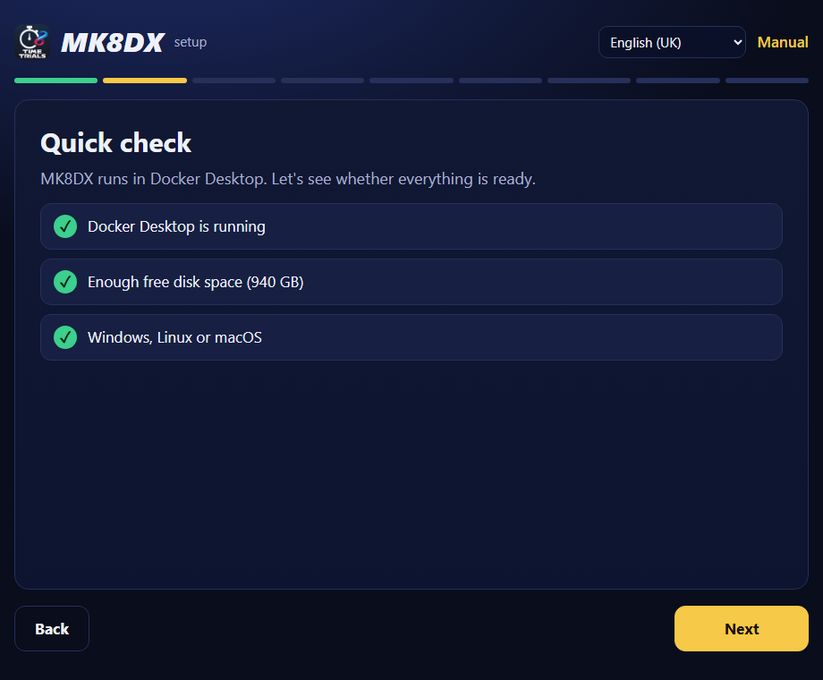
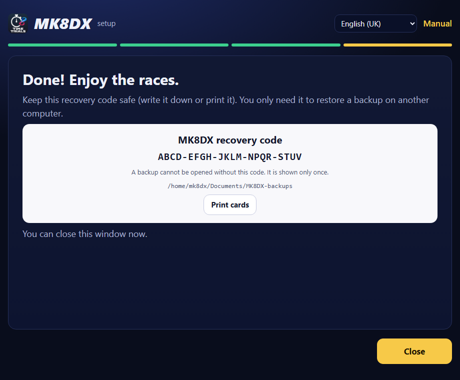
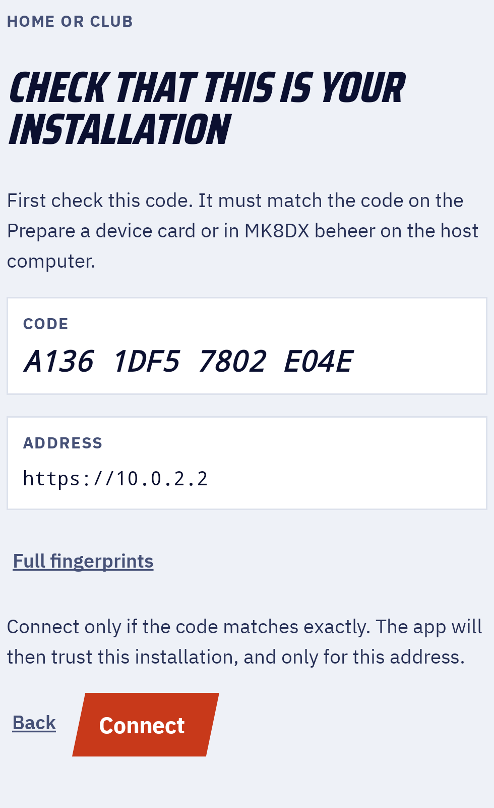

선택한 항목에 해당하는 단계만 표시됩니다.
집이나 클럽에서 쓰는 MK8DX — 설명서
이 문서는 영어 설명서를 기계 번역한 것입니다. 기준은 영어판이며, 수정 제안은 "Translation correction" 이슈 양식으로 보내 주세요.
이 설명서는 빈 컴퓨터에서 시작해 한 번의 게임 저녁을 마칠 때까지 단계별로 안내합니다. IT 지식은 필요 없습니다. 장을 순서대로 읽으세요. 각 장은 앞 장을 바탕으로 합니다.
먼저 솔직하게 말씀드립니다: 집과 클럽용 설치는 버전 0.2.0부터 출시되었습니다. Windows 11은 네트워크에 연결된 Android 휴대폰까지 포함해 처음부터 끝까지 테스트되었습니다. Linux는 WSL 2에서만 테스트되었고, 별도의 Linux PC나 Raspberry Pi에서는 아직 테스트되지 않았습니다. macOS 패키지는 빌드되었지만 아직 실제 Mac에서 테스트되지 않았고, iPhone도 아직 테스트되지 않았습니다. 테스트되지 않았거나 아직 빌드되지 않은 부분은 해당 단계에 그렇게 적혀 있습니다.
단계 읽는 법: 할 일 뒤에는 내가 할 일이, 보이는 화면 뒤에는 그다음에 일어나야 할 일이, 다르게 보이나요? 뒤에는 그런 경우 할 일이 나옵니다. 굵은 글씨는 화면에 그대로 보이는 버튼이나 문구입니다. 시작 창과 일부 시스템 창처럼 번역되지 않는 화면의 문구는 영어 그대로 적고, 장마다 처음 나올 때 괄호 안에 우리말 뜻을 붙였습니다.
1. 집이나 클럽에서 쓰는 MK8DX란 무엇이며, 무엇이 필요한가요?
MK8DX는 마리오 카트 8 디럭스용 웹사이트입니다: 타임 어택 기록, LiveTrial 녹화, 토너먼트 밤을 보관하고 비교합니다. 이 설치를 사용하면 웹사이트가 내 네트워크 안의 컴퓨터 한 대에서 실행됩니다. 같은 네트워크의 휴대폰, 태블릿, 다른 컴퓨터는 그 컴퓨터를 통해 웹사이트를 엽니다. 인터넷으로 나가는 것은 없습니다.
모두 개인 로그인 카드로 로그인합니다: QR 코드가 있는 카드입니다. QR 코드는 휴대폰이나 태블릿의 카메라로 스캔하는 정사각형 바코드입니다.
이 설명서에서는 MK8DX를 실행하는 컴퓨터를 MK8DX 컴퓨터라고 부릅니다.
필요한 것:
- 사람들이 플레이하는 동안 켜져 있는 컴퓨터 한 대: Intel 또는 AMD 프로세서가 있는 Windows 11, Linux 또는 macOS. 메모리는 8 GB를 권장합니다. 설치 과정에서 디스크 여유 공간이 6 GB 이상인지 확인합니다.
- 홈 네트워크: 공유기의 Wi-Fi나 네트워크 케이블. 공유기(라우터)는 네트워크를 만드는 상자입니다(대개 인터넷 회사에서 받은 것). 모든 기기가 같은 네트워크에 있어야 합니다. 게스트 네트워크는 쓰지 마세요: 보통 기기끼리 서로 분리합니다.
- 플레이어용 휴대폰, 태블릿 또는 다른 컴퓨터. QR 코드를 스캔할 카메라가 있으면 좋습니다.
- 프린터는 로그인 카드와 복구 코드를 인쇄할 때 편리하지만 꼭 필요하지는 않습니다.
필요 없는 것:
- 플레이하는 동안 인터넷이 필요 없습니다. 준비할 때만 Docker, Python, MK8DX 패키지를 한 번 다운로드합니다(또는 누군가 USB 메모리로 건네줍니다).
- 다른 회사의 계정, 이메일 주소, 클라우드가 필요 없습니다.
- 구독이 필요 없습니다. MK8DX와 Python은 무료입니다. Docker Desktop은 개인 사용과 소규모 조직에 무료이며, 조건은 Docker 웹사이트에 있습니다. Linux에서는 무료 Docker Engine을 사용합니다.
2. 컴퓨터 준비하기
MK8DX에는 무료 도우미 프로그램 두 개가 필요합니다:
- Docker는 프로그램을 격리된 "컨테이너"에서 실행합니다. MK8DX 웹사이트와 데이터베이스가 그 안에서 실행됩니다. Windows와 macOS에서는 프로그램 이름이 Docker Desktop입니다.
- Python은 프로그래밍 언어입니다. MK8DX 설치 프로그램이 Python으로 작성되어 있습니다. Python 3.12~3.15가 필요합니다.
내 컴퓨터에 해당하는 부분(2A, 2B 또는 2C)만 하고 나머지 두 부분은 건너뛰세요.
2A. Windows 11 준비하기
- 할 일 컴퓨터의 프로세서를 확인합니다: 시작 → Settings(설정) → System(시스템) → About(정보), System type(시스템 종류) 줄.보이는 화면 "64-bit operating system, x64-based processor"(64비트 운영 체제, x64 기반 프로세서).다르게 보이나요? ARM이라고 나오면 MK8DX Windows 패키지가 맞지 않습니다: x64(Intel 및 AMD)용만 있습니다.
- 할 일 먼저 WSL(Windows Subsystem for Linux)을 설치합니다. Docker가 그 위에서 실행되는 Windows의 구성 요소로, WSL이 없으면 Docker Desktop을 설치할 수 없습니다. 시작 단추를 마우스 오른쪽 단추로 클릭하고 Terminal (Admin)(터미널(관리자)) 또는 Windows PowerShell (Admin)(Windows PowerShell(관리자))을 선택합니다. Windows가 권한을 물으면 Yes(예)를 클릭합니다.
wsl --install을 입력하고 Enter를 누릅니다.보이는 화면 Windows가 WSL과 Ubuntu를 다운로드해 설치합니다. 몇 분 걸립니다. 마지막에 컴퓨터를 다시 시작해야 한다고 나옵니다. 컴퓨터를 다시 시작하세요.다르게 보이나요? 다시 시작한 뒤 Ubuntu의 사용자 이름과 비밀번호를 묻는 창이 열리면: 원하는 이름과 비밀번호를 입력하고(MK8DX에는 필요 없음) 창을 닫으세요. WSL이 이미 설치되어 있다고 나오면wsl --update를 입력하고 Enter를 누르세요. 가상화("Virtual Machine Platform" 또는 "virtualization")가 언급되면 컴퓨터 BIOS에서 가상화가 꺼져 있는 것입니다. 켜거나(제조사에서는 흔히 Intel VT-x 또는 AMD-V라고 부름) 도움을 요청하세요. - 할 일 docker.com에서 Windows용 Docker Desktop(x86_64 / AMD64)을 다운로드하고 받은 파일을 엽니다.보이는 화면 WSL 2를 사용할지 선택하는 Docker 설치 프로그램. WSL은 Docker가 그 위에서 실행되는 Windows의 구성 요소입니다. 그 선택을 체크한 채로 두고 OK(확인)를 클릭합니다.다르게 보이나요? 이 앱이 변경을 해도 되는지 Windows가 물으면 Yes(예)를 클릭하세요.
- 할 일 설치가 끝날 때까지 기다리고, Docker가 요청하면 컴퓨터를 다시 시작합니다.보이는 화면 다시 시작한 뒤 Docker Desktop이 열립니다(또는 시작 메뉴에서 직접 여세요). 처음에는 Docker가 약관에 동의하라고 요청합니다.다르게 보이나요? Docker가 로그인하거나 계정을 만들라고 하면: MK8DX에는 Docker 계정이 필요 없으니, 건너뛸 수 있으면 건너뛰세요. Docker가 여전히 WSL이 없거나 업데이트해야 한다고 하면 2단계를 다시 하고(
wsl --install또는wsl --update) 다시 시작하세요. - 할 일 Docker Desktop 창에서 기다립니다.보이는 화면 왼쪽 아래에 Engine running(엔진 실행 중).다르게 보이나요? "Engine starting"(엔진 시작 중)은 몇 분 걸릴 수 있습니다. 멈춰 있거나 오류가 나면 컴퓨터를 다시 시작하고 Docker Desktop을 다시 여세요. Docker는 일반 Linux 컨테이너 모드여야 합니다("Windows containers"가 아님).
- 할 일 python.org → Downloads(다운로드)로 가서 Windows용 Python install manager(Python 설치 관리자)를 다운로드합니다(파일 이름이
.msix로 끝남). 이것이 현재 Windows에 Python을 설치하는 공식 방법입니다. 받은 파일을 열고 Install(설치)을 클릭합니다.보이는 화면 Windows가 Python 설치 관리자를 설치합니다. 그다음 창을 닫아도 됩니다.다르게 보이나요? Microsoft Store에서 설치할 수도 있습니다: "Python install manager"를 검색하고 Install(설치)을 클릭하세요. 둘 중 하나만 쓰고, 둘 다 쓰지는 마세요. - 할 일 시작을 클릭하고
PowerShell을 입력한 뒤 Windows PowerShell을 열고,py install 3.15를 입력하고 Enter를 누릅니다. 이 명령이 Python 자체를 설치합니다(설치 관리자는 Python을 가져오는 도구일 뿐입니다).보이는 화면 처음에는 설정을 확인하는 질문이 몇 개 나옵니다. Enter(제안된 선택) 또는y로 답하세요. 그다음 Python이 다운로드되어 설치됩니다. 폴더를 PATH에 추가할지 묻는 질문에는y로 답해도 되지만 필수는 아닙니다.다르게 보이나요? 위와 같이 정확히 3.15를 설치하세요. 3.12, 3.13, 3.14도 작동하지만, 더 새 버전(3.16 이상)은 아직 작동하지 않습니다. - 할 일 PowerShell을 닫고 다시 연 다음
python --version을 입력하고 Enter를 누릅니다.보이는 화면Python 3.15뒤에 숫자. 예:Python 3.15.2.다르게 보이나요? Microsoft Store가 열리거나 python을 찾을 수 없다고 나오면: 시작을 클릭하고 Manage app execution aliases(앱 실행 별칭 관리)를 입력해 엽니다. Python (default)(Python(기본값))를 켜고 App Installer python.exe와 python3.exe를 끄세요. 예전에 오래된 Python이나 "Python launcher"를 설치했다면 Settings → Apps → Installed apps(설정 → 앱 → 설치된 앱)에서 제거하고 다시 시도하세요.
2B. Linux(Ubuntu 또는 Debian) 준비하기
Linux는 아직 MK8DX와 함께 처음부터 끝까지 테스트되지 않았습니다. 아래 단계는 Ubuntu 24.04 이상을 기준으로 작성되었습니다. 명령은 터미널에 입력합니다: 텍스트 명령을 주는 창입니다(Ubuntu에서는 Ctrl+Alt+T로 엽니다). 모든 명령은 Enter로 끝냅니다. 명령 앞의 sudo는 "이 컴퓨터의 관리자로서"라는 뜻입니다: 그러면 Linux가 비밀번호를 묻고, 입력하는 동안 글자가 보이지 않습니다. 정상입니다.
- 할 일
python3 --version을 입력합니다.보이는 화면Python 3.12,3.13,3.14또는3.15.다르게 보이나요? 더 낮은 숫자(예: Debian 12는 3.11)는 너무 오래되었고, 3.16 이상은 아직 지원되지 않습니다. 그런 경우 더 새로운 Linux 버전이 필요합니다. Ubuntu 24.04에는 Python 3.12가 있습니다. - 할 일
sudo apt update를 입력한 다음sudo apt install docker.io docker-compose-v2 python3-venv unzip를 입력합니다. 계속할지 묻는 질문에 Y와 Enter로 답합니다.보이는 화면 패키지가 다운로드되어 설치됩니다.다르게 보이나요? apt가 패키지를 찾지 못하면 내 Linux에서는 이름이 다른 것입니다(Debian에서 그럴 수 있음). 계속 진행하고 5단계에서 Docker Compose가 작동하는지 확인하세요. - 할 일
sudo systemctl enable --now docker를 입력합니다. 이렇게 하면 Docker가 지금, 그리고 컴퓨터가 시작될 때마다 시작됩니다.보이는 화면 오류 없음(가끔 "Created symlink"로 시작하는 줄). - 할 일
sudo usermod -aG docker $USER를 입력합니다. 내 사용자에게 Docker를 사용할 권한을 줍니다. 그다음 로그아웃했다가 다시 로그인하세요(또는 다시 시작): 권한은 다시 로그인한 뒤에야 적용됩니다.보이는 화면 오류 없음. → 참고: docker 그룹에 속한 사람은 사실상 이 컴퓨터의 관리자 권한을 가집니다. 나 자신만 추가하세요. - 할 일
docker info와docker compose version으로 확인합니다.보이는 화면 오류 없는 세부 정보 목록과, 숫자가 붙은 "Docker Compose version".다르게 보이나요? "permission denied"(권한 거부): 4단계를 하고 로그아웃하는 것을 잊지 마세요. "Cannot connect to the Docker daemon"(Docker 데몬에 연결할 수 없음): 3단계를 하세요.
방화벽은 컴퓨터가 어떤 연결을 들여보낼지 결정하는 보호 장치입니다. 내 Linux에서 ufw 또는 firewalld 방화벽이 켜져 있으면, 3장의 설치 과정에서 MK8DX를 통과시키는 명령을 보여 줍니다.
2C. macOS 준비하기
참고: macOS는 아직 실제 Mac에서 테스트되지 않았습니다. 아래 단계는 설치 프로그램이 macOS에서 기대하는 내용을 따릅니다.
- 할 일 Apple 메뉴 → About This Mac(이 Mac에 관하여)을 선택하고 Chip(칩) 또는 Processor(프로세서)를 봅니다.보이는 화면 Apple 칩(M1, M2 이후):
macos-arm64패키지를 받으세요.다르게 보이나요? Intel 프로세서:macos-amd64패키지를 받으세요. macOS 10.15 이상과, 내 Mac을 아직 지원하는 Docker Desktop이 필요합니다. - 할 일 docker.com에서 칩에 맞는 Mac용 Docker Desktop을 다운로드하고, 받은 파일을 열어 Docker를 Applications(응용 프로그램)로 끕니다.보이는 화면 응용 프로그램 폴더에 Docker.
- 할 일 Docker를 엽니다. 약관에 동의하고, macOS가 비밀번호를 물으면 입력합니다.보이는 화면 잠시 후 Docker Desktop 창에 Engine running(엔진 실행 중).다르게 보이나요? Docker가 로그인하라고 하면: MK8DX에는 Docker 계정이 필요 없으니, 건너뛸 수 있으면 건너뛰세요.
- 할 일 python.org에서 Python 3.15의 macOS 설치 프로그램을 다운로드해 엽니다. Continue(계속)와 Install(설치)로 단계를 진행합니다.보이는 화면 설치에 성공했다는 메시지.
- 할 일 Terminal(터미널)을 열고(응용 프로그램 → 유틸리티 → 터미널)
python3 --version을 입력한 뒤 Enter를 누릅니다.보이는 화면Python 3.12~3.15.다르게 보이나요? 더 낮은 숫자(예: Apple 자체의 3.9): 터미널을 닫고 다시 여세요. 여전히 낮으면 python.org에서 Python을 다시 설치하세요. - 할 일 터미널에
docker info를 입력합니다.보이는 화면 오류 없는 세부 정보 목록.다르게 보이나요? Docker Desktop을 시작하고 Engine running(엔진 실행 중)이 나올 때까지 기다리세요.
3. MK8DX 설치하기
패키지 압축 풀기
- 할 일 내 시스템에 맞는 집·클럽용 MK8DX 패키지를 다운로드합니다: Windows, Linux 또는 macOS용이며, Linux와 macOS는 프로세서(amd64 또는 arm64)에 맞는 것도 고릅니다. 다운로드가 올바른지 확인하려면 SHA-256 값을 같은 릴리스의
SHA256SUMS.txt에 있는 해당 줄과 비교합니다(Windows:Get-FileHash <file> -Algorithm SHA256, Linux:sha256sum <file>, macOS:shasum -a 256 <file>).docs/RELEASE_PACKAGES.md#check-a-download도 참고하세요.보이는 화면 다운로드 폴더에 zip 파일.다르게 보이나요? 브라우저가 파일이 안전하지 않거나 잘 다운로드되지 않는 파일이라고 경고하면: Keep(유지)을 선택하세요. Windows: 그다음 zip 파일을 마우스 오른쪽 단추로 클릭 → Properties(속성), 아래쪽의 Unblock(차단 해제)을 체크하고 OK(확인)를 클릭합니다. 압축을 풀기 전에 하세요. 그렇지 않으면 Windows(스마트 앱 컨트롤)가 나중에Start-MK8DX-LAN.cmd를 차단할 수 있습니다. 스마트 앱 컨트롤을 끄지 마세요: 한 번 끄면 Windows를 새로 설치해야만 다시 켤 수 있습니다. - 할 일 zip 파일을 계속 둘 폴더에 압축을 풉니다. 예: 문서 안의 MK8DX 폴더. Windows: zip 파일을 마우스 오른쪽 단추로 클릭 → Extract All(압축 풀기). 그대로 유지할 폴더를 고르세요: 나중에 MK8DX는 항상 이 폴더에서 시작하므로 옮기거나 지우지 마세요.보이는 화면
Start-MK8DX-LAN.cmd,README-FIRST.txt와docs,images,tooling폴더 등이 있는 폴더.다르게 보이나요? 파일 탐색기에서 zip 파일을 열기만 했다면 실제로 압축을 푸세요: zip 파일 안에서 시작하면 작동하지 않습니다. 파일 관리자가 없는 Linux(서버 또는 WSL):unzip ~/Downloads/mk8dx-a2-linux-amd64-<version>.zip -d ~/Documents/MK8DX(내 파일 이름으로;unzip은 2B장 2단계에서 설치합니다).
Windows에서 시작하기
- 할 일 압축을 푼 폴더에서 Start-MK8DX-LAN.cmd를 두 번 클릭합니다.보이는 화면 MK8DX 로고와 신호음이 있는 3-2-1-GO 카운트다운이 나오는 창(생략하려면), 그다음 "MK8DX 패키지:"와 "비공개 설치:" 같은 줄. 처음에는 "포함된 Python 패키지를 준비하는 중(한 번만, 인터넷 없이)."와 "포함된 Docker 이미지를 불러오는 중이에요. 몇 분 걸릴 수 있어요."도 나옵니다. 몇 분 걸립니다. 그다음 "MK8DX setup is open in your browser:"(MK8DX 설치가 브라우저에서 열렸음)가 나오고 브라우저에서 설치 화면이 열립니다.다르게 보이나요? 아래 메시지를 참고하세요.
- 할 일 설치 화면에서 Finish(마침)를 클릭할 때까지 검은 창을 열어 두세요. 창에도 그렇게 적혀 있습니다: "Keep this window open until you click Finish."(Finish를 클릭할 때까지 이 창을 열어 두세요).
Windows의 검은 창에 나오는 메시지:
- "Python 3.12~3.15가 없어요. python.org(또는 Microsoft Store)에서 Python install manager를 설치하고, py install 3.15를 실행한 다음, PowerShell을 다시 열고 다시 시도하세요." 2A장의 6~8단계를 한 다음 Start-MK8DX-LAN.cmd를 다시 두 번 클릭하세요.
- "Docker Desktop이 없거나 실행되고 있지 않아요. Docker Desktop을 Linux 컨테이너 모드로 시작하고 "Engine running"이 표시될 때까지 기다린 다음 다시 시도하세요." Docker Desktop을 시작하고 Engine running이 나올 때까지 기다린 뒤 다시 두 번 클릭하세요.
- 오류 아래에 "선택한 단계가 중지됐어요. 다시 시도하기 전에 위 메시지를 읽어 보세요."가 나옵니다. 그 위의 줄을 읽고 문제를 해결한 다음 아무 키나 눌러 창을 닫으세요.
Linux와 macOS에서 시작하기
- 할 일 압축을 푼 폴더에서 터미널을 엽니다. Linux: 파일 관리자가 제공하면 폴더 안에서 마우스 오른쪽 단추를 클릭하고 "Open in Terminal"(터미널에서 열기)을 선택합니다. macOS와 Linux에서는 이렇게도 됩니다: 터미널을 열고
cd(뒤에 공백 하나)를 입력한 다음 폴더를 창으로 끌어다 놓고 Enter를 누릅니다.보이는 화면 터미널이 패키지 폴더에 있습니다. - 할 일
sh tooling/start-mk8dx.sh를 입력하고 Enter를 누릅니다.보이는 화면 MK8DX 로고와 3-2-1-GO 카운트다운, 그다음 "MK8DX 패키지:", Python 버전 번호, "Docker Compose version". 처음에는 "포함된 Docker 이미지를 불러오는 중이에요. 몇 분 걸릴 수 있어요."와 "포함된 Python 패키지를 준비하는 중(한 번만, 인터넷 없이)."도 나옵니다. 그다음 "비공개 설치:"과 "MK8DX setup is open in your browser:"(MK8DX 설치가 브라우저에서 열렸음)가 나오고 브라우저에서 설치 화면이 열립니다.다르게 보이나요? 브라우저가 열리지 않으면 터미널에서http://127.0.0.1:로 시작하는 주소를 복사해 브라우저에 붙여 넣으세요. - 할 일 Finish(마침)를 클릭할 때까지 터미널을 열어 두세요.
Linux와 macOS의 터미널에 나오는 메시지:
- "Python 3.12~3.15가 없어요. 설치한 다음(Ubuntu/Debian: sudo apt install python3 python3-venv, macOS: python.org) 다시 시도하세요." 2B장 또는 2C장을 다시 하세요.
- "Docker가 실행되고 있지 않거나 이 사용자에게 사용 권한이 없어요(Linux: sudo systemctl start docker를 실행하고 docker 그룹에 가입하세요. macOS: Docker Desktop을 시작하세요)." Linux: 2B장의 3단계와 4단계를 하세요. macOS: Docker Desktop을 시작하세요.
- "비공개 Python 환경을 만들 수 없었어요(Ubuntu/Debian: sudo apt install python3-venv)." 2B장 2단계처럼 python3-venv를 설치하세요.
브라우저의 설치 화면
설치 화면은 브라우저의 한 페이지로, MK8DX 컴퓨터 자체에서만 작동합니다. 브라우저의 언어(게임의 15개 언어 중 하나, 그 밖에는 영어)로 표시됩니다. 오른쪽 위에는 다른 언어를 고르는 언어 메뉴와 설명서가 있으며, 설명서는 이 설명서를 엽니다. 아래쪽에는 뒤로, 때로는 고급, 그리고 다음이 있습니다. 위쪽의 점들은 진행 정도를 보여 줍니다.
- MK8DX에 오신 것을 환영해요할 일 화면을 읽고 다음을 클릭합니다.보이는 화면 "빠른 확인". 이 화면의 백업 복원 버튼은 새 컴퓨터에서만 씁니다(10장).
- 빠른 확인할 일 잠시 기다립니다.보이는 화면 Docker Desktop 실행 중, 충분한 디스크 여유 공간(GB 수 표시), Windows, Linux 또는 macOS 옆에 초록색 체크 표시 세 개. 다음을 클릭합니다.다르게 보이나요? 설명이 붙은 느낌표. 예: "Docker Desktop을 시작하고 'Engine running'이 표시될 때까지 기다린 다음 '다시 시도'를 클릭하세요." 또는 "이 드라이브에 6 GB 이상의 공간을 확보하세요." 문제를 해결하고 다시 시도를 클릭하세요. Linux에서도 첫 번째 항목 이름은 "Docker Desktop 실행 중"이지만, 그곳에서는 Docker Engine을 뜻합니다.
- 어떤 종류의 설치인가요?할 일 집, 클럽, LAN 나이트 네트워크, 인터넷 불필요(권장)를 선택된 상태로 두고 다음을 클릭합니다.보이는 화면 "내 네트워크".
- 내 네트워크 네트워크 주소(IP 주소)는 네트워크 안의 기기들이 이 컴퓨터를 찾는 번호로, 집 주소의 번지와 같습니다.할 일 "휴대폰, 태블릿, 다른 PC는 이 주소로 MK8DX에 접속해요:" 아래의 주소를 읽고 적어 둡니다. 예:
https://192.168.1.50. 설치를 클릭합니다.보이는 화면 Windows에서는 "이 네트워크는 홈(개인) 네트워크로 설정되어 있어요." 또는 "Windows가 현재 이 네트워크를 공용으로 취급해요. '설치'를 클릭하면 MK8DX가 네트워크를 개인으로 설정하고 MK8DX만 허용해요." Linux와 macOS에서는 여기에 네트워크 관련 문장이 나오지 않습니다.다르게 보이나요? 컴퓨터에 연결이 둘 이상이면(케이블과 Wi-Fi) 고급을 클릭하고 "이 컴퓨터의 다른 주소 선택:"에서 휴대폰들이 있는 네트워크의 주소를 고르세요. "네트워크 주소를 찾을 수 없어요."가 나오면 컴퓨터를 홈 네트워크에 연결하고 다시 시도를 클릭하세요. - 설치 중할 일 창을 열어 둔 채 기다립니다.보이는 화면 "MK8DX를 설정하는 중이에요. 이 창을 열어 두세요."와 차례로 "설치 준비 중", "네트워크 허용 중 (Windows가 권한을 요청해요)", "데이터베이스와 웹사이트 시작 중", "확인 중", 마지막으로 "MK8DX가 실행 중이에요. 짧은 단계가 두 개 남았어요." 다음을 클릭합니다. Windows에서는 Windows PowerShell이 변경을 해도 되는지 Windows 창이 한 번 묻습니다: Yes(예)를 클릭하세요. 이로써 MK8DX가 홈 네트워크를 개인 네트워크로 표시하고 방화벽(Windows의 보호 장치)에서 MK8DX만 통과시킵니다. 이 컴퓨터와 주소에 MK8DX를 전에 설치한 적이 있다면 그 권한이 아직 남아 있으므로 Windows가 다시 묻지 않습니다.다르게 보이나요? 빨간 오류: 세부 정보를 클릭해 무엇이 잘못되었는지 읽고, 문제를 해결한 뒤 다시 시도를 클릭하세요. Windows 창에서 No(아니요)를 클릭했다면 Windows가 변경을 허용하지 않았다고 나옵니다. 다시 시도를 클릭한 다음 Yes(예)를 클릭하세요.
- Linux만 해당: 방화벽.할 일 설치 중이나 설치 후에 세부 정보를 클릭하고 "Network:"로 시작하는 줄을 찾습니다.보이는 화면 "not-needed"(필요 없음, 할 일 없음) 또는 "manual:"(수동) 뒤에
sudo ufw allow from 192.168.1.0/24 to 192.168.1.50 port 80,443 proto tcp같은 명령. → 그다음 할 일: 터미널에 그 명령을 그대로(그곳에 표시된 내 주소로) 입력하세요. 이 명령이 없으면 휴대폰이 웹사이트를 열 수 없습니다. - 내 관리자 계정 관리자는 사람을 추가하고 로그인 카드를 만드는 사람, 즉 나입니다.할 일 내 이름에 이름을 입력하고(예: "아빠" 또는 "클럽 운영진") 다음을 클릭합니다. 이 이름은 이 설치 안에서만 보입니다.보이는 화면 "누가 플레이하나요?"
- 누가 플레이하나요?할 일 이름 (한 줄에 한 명) 에 플레이어 이름을 한 줄에 하나씩 입력하고 추가를 클릭합니다. 또는 바로 건너뛰기를 클릭하세요: 나중에 MK8DX beheer(5장)에서 똑같은 방법으로 할 수 있습니다.보이는 화면 "이 설치에 있는 사람:" 아래의 이름들, 내 이름 뒤에는 "(관리자)". 다음을 클릭합니다.
- 휴대폰과 PC에서 로그인할 일 여기서 바로 로그인 카드를 만들 수 있고(5장과 6장에서 방법을 설명), 그냥 다음을 클릭해도 됩니다.보이는 화면 "완료! 즐거운 레이스 되세요."
- 완료! 즐거운 레이스 되세요.할 일 두 주소를 적어 둡니다: 웹사이트(예:
https://192.168.1.50)와 새 기기(예:http://192.168.1.50/setup). 체크 표시 세 개를 그대로 둡니다: Windows와 함께 MK8DX 시작, 매일 밤 백업하기, 바탕 화면에 'MK8DX beheer' 바로 가기 만들기. 마침을 클릭합니다.보이는 화면 복구 코드(4장). → Linux와 macOS에서는 첫 번째 체크 항목 이름이 "컴퓨터가 시작될 때 MK8DX 시작"입니다. macOS에서는 로그인할 때 Docker Desktop을 엽니다. Linux에서는 2B장의sudo systemctl enable --now docker가 그 일을 맡습니다. 아직 하지 않았다면 마침 후 설치 화면이 바로 그 명령을 보여 줍니다. - 닫기할 일 4장을 읽고 복구 코드를 보관하세요. 그다음 닫기를 클릭합니다.보이는 화면 "이제 이 창을 닫아도 돼요." 브라우저 탭을 닫으세요. Windows에서는 검은 창이 키를 누르라고 합니다. 아무 키나 누르면 닫힙니다. 아무것도 하지 않으면 설치 페이지는 10분 뒤 저절로 멈춥니다. MK8DX 자체는 계속 실행됩니다.




4. 복구 코드와 백업 폴더
백업은 MK8DX에 있는 모든 것(사람, 기록, 토너먼트, 설정)의 예비 사본입니다. MK8DX는 매일 밤 03:00에 백업을 만들고 가장 최근의 7개를 보관합니다. 백업은 암호화되어 있어서 키 없이는 읽을 수 없습니다.
복구 코드가 바로 그 키입니다. 영문자와 숫자 4개씩 다섯 묶음입니다. 예: ABCD-EFGH-JKLM-NPQR-STUV. 다른 컴퓨터에서 백업을 복원할 때만 필요합니다.
- 할 일 마침 후 MK8DX 복구 코드 카드를 봅니다.보이는 화면 코드, "이 코드가 없으면 백업을 열 수 없어요. 한 번만 표시돼요."라는 문장, 그 아래에 백업이 저장되는 폴더.
- 할 일 코드를 종이에 옮겨 적거나 카드 인쇄를 클릭해 이 페이지를 인쇄합니다. 한 글자씩 확인하세요.보이는 화면 종이에 적힌 코드. → 왜 한 번만 보여 주나요? MK8DX는 매일 밤의 백업을 위해 이 컴퓨터에 코드를 보호된 상태로 보관하지만 다시는 보여 주지 않습니다. 컴퓨터가 고장 나면 종이만 남습니다.
- 할 일 종이를 컴퓨터 옆이 아닌 안전한 곳에 보관하세요. 코드와 백업을 가진 사람은 모든 것을 열 수 있습니다.
백업 위치:
- Windows: 문서 폴더 안의
MK8DX-backups폴더(디스크 경로:C:\Users\<your name>\Documents\MK8DX-backups). - Linux와 macOS: 홈 폴더 안의
Documents/MK8DX-backups폴더(즉~/Documents/MK8DX-backups). 다른 언어로 된 Linux에서도 이 폴더 이름은 Documents입니다. - 설치 화면은 복구 코드 아래에 정확한 폴더를 보여 줍니다.
가끔 MK8DX-backups 폴더를 USB 메모리나 다른 드라이브에 복사하세요. 그렇지 않으면 컴퓨터가 고장 났을 때 백업도 그 고장 난 컴퓨터에만 남아 있게 됩니다.
매일 밤 백업하기의 체크를 해제하고 마침을 클릭하면 MK8DX가 매일 밤 백업을 멈춥니다. 이미 만든 백업은 그대로 남습니다. 나중에 다시 체크하면 같은 복구 코드로 백업이 다시 시작되며, 코드는 다시 표시되지 않습니다. 그 코드가 더 이상 없다면 아래처럼 새 코드를 만드세요.
새 복구 코드
다른 사람이 코드를 봤을 수 있거나 종이를 잃어버렸다면 새 코드를 만드세요. 버전 0.2.7부터 사용할 수 있습니다.
- 할 일 MK8DX beheer를 열고 "완료! 즐거운 레이스 되세요."가 나올 때까지 다음을 클릭한 다음, 새 복구 코드 만들기에 체크하고 마침을 클릭합니다.보이는 화면 새 코드가 적힌 MK8DX 복구 코드 카드(한 번만 표시됨)와, 이전 백업에는 계속 예전 코드가 필요하다는 문장.
- 할 일 위의 2단계처럼 새 코드를 적어 둡니다. 예전 종이는 이전 백업과 함께 보관하세요. 이전 백업은 변환되지 않으며 예전 코드로만 열립니다. 더 이상 필요 없으면 그 이전 백업과 예전 종이를 버리세요.보이는 화면 다음 백업부터 새 코드를 사용합니다.

5. 사람과 로그인 카드(MK8DX beheer)
MK8DX beheer(네덜란드어로 "MK8DX 관리")는 설치 화면과 같은 페이지이지만 나중에 쓰는 용도입니다: 사람을 추가하고 로그인 카드를 만듭니다. MK8DX 컴퓨터 자체에서만 작동합니다. 바탕 화면 바로 가기 이름은 모든 언어에서 "MK8DX beheer"이고, 페이지 제목은 MK8DX 관리입니다.
계정은 로그인하는 사람입니다. 플레이어는 랭킹에 표시되는 선수로, 그 사람의 기록을 가집니다. 로그인한 뒤 모두 웹사이트에서 자기 플레이어를 고르거나 자기 것이라고 요청합니다. 이름은 절대 자동으로 연결되지 않습니다.
MK8DX beheer 열기
- 할 일(Windows): 바탕 화면의 MK8DX beheer를 두 번 클릭합니다. 이 바로 가기는 Start-MK8DX-LAN.cmd와 같은 것을 시작합니다. → 보이는 화면: 짧은 레이스 인트로가 나오는 실행 창, 그다음 브라우저에서 위쪽에 "관리"가 있고 제목이 MK8DX 관리인 페이지. → 다르게 보이나요? 바로 가기가 없으면: MK8DX 폴더에서 Start-MK8DX-LAN.cmd를 두 번 클릭하세요.
- 할 일(Linux): 바탕 화면이나 앱 메뉴에서 MK8DX beheer를 시작합니다. 일부 Linux 데스크톱에서는 이런 아이콘을 먼저 허용해야 합니다(아이콘을 마우스 오른쪽 단추로 클릭하고 실행을 허용하는 옵션 선택). 3장처럼 MK8DX 폴더에서
sh tooling/start-mk8dx.sh로도 됩니다. → 보이는 화면: 터미널, 그다음 MK8DX 관리 페이지. - 할 일(macOS, 테스트 안 됨): 바탕 화면의 MK8DX beheer.command를 두 번 클릭하거나, 3장처럼
sh tooling/start-mk8dx.sh를 시작합니다. → 보이는 화면: 터미널, 그다음 MK8DX 관리 페이지.
사람 추가하기
- 할 일 이름 (한 줄에 한 명) 에 이름을 입력하고 추가를 클릭합니다.보이는 화면 "이 설치에 있는 사람:" 아래의 이름들.
- 할 일 다음을 클릭합니다.보이는 화면 두 단계로 된 "휴대폰과 PC에서 로그인": 기기 준비 카드가 있는 1단계 · 기기 준비(기기마다 한 번, 아직 로그인되지는 않음)와, 사람마다 카드 만들기 버튼이 있는 상자가 있는 2단계 · 올바른 사람으로 로그인.
카드 만들기와 인쇄하기
- 할 일 사람 옆의 카드 만들기를 클릭합니다.보이는 화면 "유효 기한"과 시각이 있는 QR 코드. 카드는 한 번만, 15분 동안 작동합니다. 그 사람이 바로 스캔하게 하거나(6장) 인쇄하세요.
- 할 일 원하는 카드를 먼저 만든 다음 카드 인쇄를 클릭합니다.보이는 화면 화면의 모든 카드("기기 준비" 카드 포함)가 들어 있는 브라우저 인쇄 창.
- 할 일 내 휴대폰에서 로그인하려면 나 자신의 카드(이름 뒤에 "(관리자)"가 붙은 것)도 만드세요.
카드 교체 또는 취소하기
- 새 카드: 그 사람의 새 카드를 만듭니다. 그러면 이 화면에 있던 그 사람의 이전 카드는 작동을 멈춥니다.
- 카드 취소: 카드가 즉시 작동을 멈춥니다. "취소됨: 이 카드는 더 이상 작동하지 않아요."가 표시됩니다. 카드를 잃어버렸거나 엉뚱한 사람에게 갔을 때 사용하세요.
- 이 화면에 아직 있는 카드만 취소할 수 있습니다. MK8DX beheer를 이미 닫았다면 사용하지 않은 카드는 15분 뒤 저절로 만료됩니다. 이미 사용되었을 수도 있다면 아래의 모든 곳에서 로그아웃을 선택하세요.
누군가를 모든 곳에서 로그아웃시키기
- 할 일 MK8DX beheer를 엽니다. 첫 화면에서 사람마다 모든 곳에서 로그아웃 버튼이 있습니다. 클릭하세요.보이는 화면 버튼이 확실한가요? 한 번 더 클릭으로 바뀝니다.
- 할 일 한 번 더 클릭합니다.보이는 화면 "모든 기기에서 로그아웃됐어요. 새 카드가 있으면 이 사람이 다시 로그인할 수 있어요." 이제 그 사람은 웹사이트와 앱에서 로그아웃되고, 그 계정으로의 한 번 탭 전환이 사라지며, 그 사람의 열린 카드는 작동을 멈춥니다.다르게 보이나요? 내 이름 옆에서는 두 번째 클릭 때 "본인은 웹사이트의 계정 메뉴('모든 기기에서 로그아웃')에서 로그아웃하세요."가 표시되고 아무것도 로그아웃되지 않습니다.
MK8DX beheer 닫기
- 할 일 "완료! 즐거운 레이스 되세요."가 나올 때까지 다음을 클릭하고, 체크 표시를 그대로 둔 채 마침을 클릭한 다음 닫기를 클릭합니다.보이는 화면 "이제 이 창을 닫아도 돼요." MK8DX는 계속 실행됩니다.


6. 기기 준비와 로그인
인증서는 디지털 신분증입니다. 인증서가 있으면 휴대폰은 자신이 다른 것이 아닌 바로 내 MK8DX 컴퓨터와 통신하고 있음을 확실히 알 수 있고, 연결이 암호화됩니다(https). MK8DX는 인터넷 없이 작동하므로 설치 과정에서 자체 인증서를 만듭니다. 모든 기기는 이 인증서를 한 번 신뢰하도록 배워야 합니다. 지문은 정확히 이 인증서에만 속한 짧은 코드로, 올바른 인증서를 설치하는지 확인하는 데 씁니다.
집에서 인터넷 없이 쓰는데도 왜 인증서가 필요할까요?
- 내 MK8DX라는 것을 확실히 알 수 있습니다. 집이나 클럽 네트워크에서는 같은 Wi-Fi에 있는 누구든(예: 노트북을 가진 손님) 내 MK8DX 컴퓨터인 척할 수 있습니다. 인증서가 없으면 휴대폰은 그 차이를 알 수 없습니다. 인증서가 있으면 브라우저가 다른 컴퓨터를 거부합니다.
- 아무도 엿들을 수 없습니다. 로그인 카드, 로그인 세션, 입력하는 모든 내용이 Wi-Fi를 통해 암호화되어 전송됩니다.
- 왜 MK8DX가 자체 인증서를 만들까요? 인터넷의 웹사이트는 모든 기기에 이미 들어 있는 잘 알려진 발급 기관의 인증서를 씁니다. 이런 기관은
192.168.1.50같은 집 안 주소에는 인증서를 발급하지 않고, 인터넷 없이는 작동하지도 않습니다. 그래서 MK8DX는 설치할 때 자체 인증서를 만들고, 나는 각 기기에 그 인증서를 신뢰해도 된다고 한 번 알려 줍니다. - 설치하면 무엇을 허용하는 것일까요? 이 인증서는 MK8DX의 사설 네트워크 주소 전용이며, 그 비밀 키는 MK8DX 컴퓨터에 보호된 상태로 남아 있습니다. 내 MK8DX의 인증서만 설치하고(지문 확인), 그 설치를 더 이상 쓰지 않을 때는 기기에서 제거하세요.
인증서를 설치하지 않으면 무엇이 작동하지 않나요?
- 브라우저가 방문할 때마다 "연결이 비공개로 설정되어 있지 않습니다" 같은 전체 페이지 경고를 보여 줍니다. 클릭해서 넘길 수는 있지만 그러지 마세요: 그러면 정말 내 MK8DX와 통신하고 있는지 더 이상 알 수 없습니다.
- 경고를 넘겨도 브라우저 알림은 작동하지 않습니다: 브라우저는 신뢰할 수 있는 인증서가 있을 때만 알림을 허용합니다. 다른 브라우저 기능도 거부될 수 있습니다.
- 인증서를 설치하지 않아도 작동하는 것: Android 앱. 앱은 기기 준비 카드에서 직접 인증서를 배웁니다(7장). 같은 기기의 브라우저에는 여전히 인증서가 필요합니다.
MK8DX 컴퓨터 자체
MK8DX가 실행되는 컴퓨터도 MK8DX를 한 번 신뢰해야 합니다. 그렇지 않으면 그 컴퓨터의 브라우저가 웹사이트에 대해 경고합니다.
- 할 일 MK8DX beheer를 열고 "휴대폰과 PC에서 로그인"이 나올 때까지 다음을 클릭한 다음 1단계 아래의 이 컴퓨터 블록을 봅니다.보이는 화면 "이 컴퓨터는 이미 MK8DX를 신뢰해요." 그러면 끝입니다.다르게 보이나요? 이 컴퓨터 준비 버튼이 보이면 2단계로 가세요.
- 할 일 이 컴퓨터 준비를 클릭합니다.보이는 화면 인증서를 설치할지 묻는 Windows 창 Security Warning(보안 경고)과 thumbprint (sha1)(지문(sha1)). MK8DX beheer의 지문과 비교하고, 일치하면 Yes(예)를 클릭합니다.보이는 화면 "이 컴퓨터는 이미 MK8DX를 신뢰해요."다르게 보이나요? No(아니요)를 클릭했거나 지문이 다르면: Yes를 클릭하지 말고 창을 닫은 뒤 도움을 요청하세요. Linux나 macOS에서는 버튼 대신, 이 컴퓨터의 브라우저에서 "기기 준비" 아래의 주소를 열라고 나옵니다. 그러면 이 컴퓨터에서 아래 단계를 따르세요.
기기마다 한 번: 기기 준비
- 할 일 휴대폰, 태블릿 또는 PC를 MK8DX 컴퓨터와 같은 Wi-Fi 또는 유선 네트워크에 연결합니다. 휴대폰에서는 Wi-Fi 대신 모바일 데이터를 쓰지 마세요.보이는 화면 연결 항목에 내 Wi-Fi 이름.
- 할 일 카메라로 기기 준비 카드(MK8DX beheer 화면 또는 종이)의 QR 코드를 스캔하고 나타나는 링크를 탭합니다. 카메라가 없으면 브라우저에 새 기기 주소를 입력합니다. 예:
http://192.168.1.50/setup.보이는 화면 "휴대폰, 태블릿, PC마다 한 번만 하면 돼요. 그다음 개인 로그인 카드를 스캔하세요."라고 적힌 이 기기 준비 페이지.다르게 보이나요? 페이지가 열리지 않으면: 네트워크와 MK8DX 컴퓨터가 켜져 있는지 확인하세요(11장). - 할 일 "먼저 이 코드를 확인하세요." 아래의 코드를 "기기 준비" 카드의 지문(4글자씩 네 묶음)과 비교합니다.보이는 화면 정확히 같은 코드.다르게 보이나요? 코드가 다르면 아무것도 설치하지 마세요. 다른 네트워크나 다른 주소에 있을 수 있으니 먼저 확인하세요.
- 할 일 내 기기에 해당하는 부분을 따릅니다. 지금 쓰는 기기에 해당하는 부분은 이미 열려 있습니다. 다른 기기라면 "다른 종류의 기기인가요?" 아래에서 여세요. 인증서 다운로드(iPhone과 iPad: 프로파일 다운로드)를 탭하고 아래 단계를 따릅니다.보이는 화면 아래쪽에 "다 됐나요? 개인 로그인 카드를 스캔하거나 다음을 여세요:"와 웹사이트 주소.
"이 기기 준비" 페이지의 단계:
- Android: 버튼을 탭해 인증서를 다운로드합니다. 설정을 열고 "인증서"를 검색합니다(흔히: 보안 → 기타 보안 설정 → 암호화 및 사용자 인증 정보 → 인증서 설치 → CA 인증서). 다운로드한 MK8DX 파일을 선택하고 PIN으로 확인합니다. 메뉴 이름은 휴대폰 제조사마다 다릅니다.
- iPhone과 iPad(이 설치에서는 아직 테스트 안 됨): 버튼을 탭해 프로필을 다운로드하고 허용합니다. 설정 → 프로파일이 다운로드됨 → 설치를 엽니다. 그다음 설정 → 일반 → 정보 → 인증서 신뢰 설정 → MK8DX를 켭니다.
- Windows: 인증서를 다운로드하고 엽니다. Install Certificate(인증서 설치) → Current User(현재 사용자) → Place all certificates in the following store(모든 인증서를 다음 저장소에 저장) → Trusted Root Certification Authorities(신뢰할 수 있는 루트 인증 기관)를 선택합니다. Intermediate Certification Authorities(중간 인증 기관)는 선택하지 마세요. 브라우저를 다시 시작합니다.
- Mac(macOS는 아직 처음부터 끝까지 테스트 안 됨): 인증서를 다운로드하고 엽니다. 키체인 접근이 열립니다. MK8DX 인증서를 열고 → 신뢰 → 항상 신뢰를 선택합니다.
- Linux(이 방법은 아직 처음부터 끝까지 테스트 안 됨): 같은 인증서를 배포판이나 브라우저의 신뢰할 수 있는 루트 저장소에 추가합니다. 정확한 단계는 배포판마다 다릅니다. Ubuntu와 Debian(WSL 2에서 테스트함): 다운로드한
root.crt는 DER 형식이므로 설치하면서 변환하세요:sudo openssl x509 -inform DER -in ~/Downloads/root.crt -out /usr/local/share/ca-certificates/mk8dx.crt다음sudo update-ca-certificates. Linux의 Firefox와 Chrome은 자체 저장소를 쓸 수 있습니다. 브라우저가 계속 경고하면 인증서 설정(Authorities, 인증 기관)에서 같은 파일을 가져오세요.
개인 카드로 로그인하기
- 할 일 내 카드(내 이름이 있는 카드)를 스캔하고 링크를 탭합니다.보이는 화면 이 MK8DX 설치에 참여하기와 "먼저 이 HTTPS 주소가 신뢰하는 호스트의 것인지 확인하세요. 이 초대는 한 번만 사용할 수 있어요." 브라우저 주소 표시줄에는 웹사이트 주소가 보여야 합니다. 예:
https://192.168.1.50.다르게 보이나요? 인증서나 안전하지 않은 연결에 대한 브라우저 경고: 절대 넘기지 마세요. 먼저 위의 "기기 준비"를 하세요. - 할 일 로그인할 사용자: 아래에서 카드의 이름을 확인합니다. 내 이름이면 "초대가 준비됐어요. 확인하면 로그인돼요."를 기다린 뒤 초대 수락을 탭합니다. 다른 이름이 보이면 수락을 탭하지 마세요: 카드는 올바른 사람을 위해 유효한 상태로 남습니다.보이는 화면 내 이름과 함께 "다음 사용자로 로그인했어요:", 그리고 MK8DX로 계속. 탭하세요.다르게 보이나요? "이 초대는 유효하지 않아요. 관리자에게 새 QR 코드를 요청하세요." 또는 "로그인에 실패했어요. 관리자에게 새 초대를 요청하세요.": 카드가 이미 사용되었거나 만료되었거나 취소된 것입니다. 관리자에게 새 카드를 만들어 달라고 하세요.
- 할 일 웹사이트의 환영 단계를 따릅니다: 이곳에 이미 기록이나 토너먼트가 있는지, 그리고 어떤 이름으로 불리고 싶은지. 이렇게 내 플레이어를 고르거나 내 것이라고 요청합니다.보이는 화면 내 이름과 내 기록.다르게 보이나요? 카드의 이름(예: '아빠')이 미리 채워져 있지 않다면: 그게 맞습니다. 카드의 이름은 MK8DX 관리 화면의 라벨일 뿐이며, 플레이어 이름은 여기서 직접 고릅니다.
같은 사람의 다른 기기
- 플레이어는 카드를 직접 만들 수 있습니다: 웹사이트의 계정 메뉴에 다른 기기에서도 로그인이 있습니다. 이것을 누르면 시각과 함께 "한 번만 작동, 유효 기한"이 적힌 카드가 있는 다른 기기에서 로그인이 열립니다. 다른 기기로 스캔하세요. 내 기기에만 보여 주세요: 스캔한 사람은 내 계정으로 로그인됩니다.
- 관리자에게는 이 버튼이 없습니다. 관리자는 MK8DX beheer에서 자신의 새 카드를 만듭니다.
- 새 기기는 항상 먼저 "기기 준비"를 한 번 합니다.
- 카메라가 없거나 MK8DX 컴퓨터 자체에서 로그인하나요? MK8DX beheer에서 그 사람의 카드를 만들고 이 컴퓨터에서 로그인(MK8DX 컴퓨터의 브라우저에서 로그인 페이지를 엶) 또는 링크 복사를 클릭하세요. 복사한 링크는 반드시 그 사람 본인에게만 보내세요(예: 개인 메시지): 링크를 연 사람은 그 사람으로 로그인할 수 있습니다. 한 번만, 15분 동안 작동합니다. "기기 준비" 카드의 주소 복사는 주소를 복사합니다. 이 주소는 비밀이 아닙니다.
기기에서 이 설치를 떠날 때: 설치할 때 썼던 같은 설정에서 인증서를 다시 제거하세요.


7. Android 앱과 LiveTrial
Android 앱 연결하기
앱 버전 2.95.0 이상이 필요합니다. 앱은 Android 설정에 인증서가 없어도 되지만, 로그인은 휴대폰의 브라우저를 거칩니다. 그러니 먼저 이 휴대폰에서 6장을 하세요: "기기 준비"를 하고 브라우저에서 카드로 로그인합니다.
- 할 일 앱을 엽니다. 새로 설치했다면 커뮤니티 선택에서 시작합니다. 그렇지 않으면 앱 위쪽의 커뮤니티 이름을 탭한 다음 커뮤니티 추가를 탭합니다.보이는 화면 집 또는 클럽과 온라인 커뮤니티 패널이 있는 커뮤니티 선택. 집 또는 클럽 아래에서 QR 코드 스캔을 탭합니다.
- 할 일 필요하면 카메라 사용을 탭하고 카메라를 허용합니다. 기기 준비 카드의 QR 코드를 스캔합니다.보이는 화면 주소와 키 지문 (SHA-256)이 있는 내 설치가 맞는지 확인하세요.다르게 보이나요? "'기기 준비' 카드의 QR 코드가 아닙니다.": 개인 카드를 스캔한 것입니다. "기기 준비" 카드를 스캔하세요. 스캔이 안 되면: MK8DX 컴퓨터의 MK8DX beheer에서 기기 준비 카드의 주소 복사를 클릭하고, 그 링크를 휴대폰으로 보낸 뒤(비밀이 아닙니다) 또는 설정 링크 붙여넣기에 붙여 넣고 다음을 탭하세요. 짧은 "새 기기" 주소(예:
http://192.168.1.50/setup)만 입력하면 충분하지 않습니다: 앱에는 QR 코드와 복사한 링크에 들어 있는 키 지문도 필요하므로 "'기기 준비' 카드의 QR 코드가 아닙니다."라고 나옵니다. 버전 0.2.6에서는 주소 복사가 아직 짧은 주소만 복사하므로, 그 버전에서는 카드를 스캔하세요. - 할 일 주소를 웹사이트 주소와 비교하고, 긴 키를 "이 기기 준비" 페이지와 비교합니다: 그 페이지에서 전체 지문을 열고 "루트 공개 키 SHA-256 (SPKI)"를 봅니다. 그 페이지는 다른 기기에서 열어도 되고, MK8DX 컴퓨터 자체에서 "새 기기" 주소로 열어도 됩니다.보이는 화면 둘 다 정확히 같음. 연결을 탭합니다(앱이 이미 다른 서버로 설정되어 있었다면 변경을 확인하세요).다르게 보이나요? 다르면 뒤로를 탭하고 연결하지 마세요. "…에서 일치하는 인증서를 받지 못했습니다": 네트워크와 MK8DX 컴퓨터가 켜져 있는지 확인하고 다시 시도하세요.
- 할 일 설정의 이 휴대폰의 플레이어에서 로그인을 탭합니다. 앱이 집이나 클럽에서는 이메일이 아니라 개인 로그인 카드로 로그인한다고 알려 줍니다. 동기화하려면 로그인을 탭합니다.보이는 화면 브라우저가 "MK8DX Time Trials for Android가 내 계정에 대한 액세스를 요청합니다."와 기기 코드가 있는 승인 페이지를 엽니다. 앱에 표시된 기기 코드와 같은지 확인하고, 방금 휴대폰에서 직접 시작한 경우에만 승인하며, 기기 승인을 탭합니다. 페이지에 "기기가 승인되었습니다. 앱으로 돌아가 로그인을 마치세요."라고 나옵니다. 앱으로 돌아갑니다. 앱에 "로그인 계정:"과 내 이름이 표시됩니다.다르게 보이나요? 브라우저가 로그인하라고 하면 먼저 카드로 로그인하세요(6장).
- 할 일 앱에서 기록을 등록합니다.보이는 화면 설치의 웹사이트에 그 기록.
연결 해제: 위쪽의 커뮤니티 이름 탭 → 커뮤니티 추가 → 이 설치 잊기.
클럽과 집을 하나의 앱에서: 앱에는 여러 커뮤니티를 담을 수 있습니다. 위쪽의 커뮤니티 이름을 탭한 다음 커뮤니티 전환를 탭하세요. 각 커뮤니티는 자체 계정과 전송되지 않은 기록을 유지합니다. 내 기록은 내 이름 → 내 기록에 있으며, 휴대폰이 MK8DX 컴퓨터에 연결할 수 없을 때도 볼 수 있습니다.
두 번째 Windows PC의 LiveTrial
LiveTrial은 캡처 카드(Switch의 화면을 PC로 보내는 장치)를 통해 타임 어택 기록을 인식하고 보관하는 Windows 프로그램입니다. LiveTrial 자체를 설치하는 방법은 docs/install/MK8DX_User_Guide_EN.txt의 6장에 설명되어 있습니다. LiveTrial 3.37.0으로 테스트 설치에서 테스트되었습니다. 단계 요약:
- 먼저 그 PC가 이 설치를 신뢰하게 합니다: 6장의 Windows 부분. 브라우저에서 경고 없이 웹사이트가 열리는지 확인하세요.
- 내 계정에 웹사이트의 플레이어가 있는지 확인합니다.
- LiveTrial을 열고 톱니바퀴(설정)를 클릭한 다음 커뮤니티 웹사이트 주소에 웹사이트 주소를 입력합니다. 예:
https://192.168.1.50. - 로그인을 클릭하고 승인 페이지 열기를 선택합니다. 브라우저에서 기기를 승인합니다.
- 지금 보내기로 주행 기록을 보내거나, 설정에서 새 기록 자동 전송을 켭니다.
알아 두면 좋은 점: 플레이어가 없으면 LiveTrial의 로그인은 먼저 웹사이트에서 플레이어를 설정하라는 메시지로 끝납니다. 주소를 바꾸면 LiveTrial이 다시 시작됩니다. 다시 시작되지 않으면 종료하고 다시 여세요. 다른 서버의 계정과 대기 중인 기록은 그 서버에 남습니다. 이 PC를 더 이상 이 설치와 함께 쓰지 않을 때는 Trusted Root Certification Authorities(신뢰할 수 있는 루트 인증 기관)에서 MK8DX 인증서를 다시 제거하세요(6장).


8. 일상적인 사용
MK8DX 컴퓨터가 켜져 있어야 합니다. 누군가 플레이하려는 동안에는 MK8DX 컴퓨터가 켜져 있고, 절전 상태가 아니며, 네트워크에 연결되어 있어야 합니다. 게임하는 저녁에는 절전 모드를 꺼 두는 것이 좋습니다. Docker가 실행 중이어야 합니다. Windows와 macOS에서는 로그인할 때 Docker Desktop이 저절로 시작됩니다(10장).
가족 전체가 쓰는 휴대폰이나 태블릿 한 대
- 모두 그 기기에서 자기 카드로 한 번 로그인합니다.
- 웹사이트: 그다음부터는 계정 메뉴에서 한 번의 탭으로 전환합니다: 계정 전환을 선택한 다음 사람을 고르세요.
- PIN: 누구나 웹사이트의 설정 → 계정 전환용 PIN에서 4자리 PIN을 설정할 수 있습니다. 그러면 그 계정으로 전환할 때 먼저 PIN을 묻습니다.
- Android 앱: 위쪽의 내 이름을 탭 → 플레이어 전환(또는 설정 → 이 휴대폰의 플레이어), 그리고 플레이어 전환로 사람을 고릅니다. 그 사람에게 PIN이 있으면 앱이 PIN 필요와 PIN(4자리)을 묻습니다. PIN이 틀리면 "PIN이 올바르지 않습니다."가 나옵니다.
- 관리자는 PIN을 설정했을 때만 그 목록에 나옵니다(설정 → 계정 전환용 PIN). PIN이 없으면 카드로 새로 로그인합니다. 관리자에게는 더 엄격합니다: PIN이 5번 틀리면 관리자 계정이 그 기기에서 사라지고, 14일 동안 사용하지 않아도 사라집니다. 그러면 다시 카드가 필요합니다. Android 앱에서는 관리자가 (아직) 목록에 나오지 않습니다.
로그아웃
- 웹사이트에서 오른쪽 위의 계정 메뉴: 로그아웃(이 기기만) 또는 모든 기기에서 로그아웃.
- 다른 사람을 모든 곳에서 로그아웃시키는 것은 관리자가 MK8DX beheer에서 모든 곳에서 로그아웃으로 합니다(5장).
카드나 휴대폰을 잃어버렸을 때
- 아직 사용하지 않은 카드를 잃어버림: MK8DX beheer 화면에 아직 있다면 카드 취소. 그렇지 않으면 15분 뒤 저절로 만료됩니다.
- 휴대폰을 잃어버렸거나 카드가 이미 사용되었을 수 있음: MK8DX beheer에서 그 사람 옆의 모든 곳에서 로그아웃을 선택하고 다시 클릭합니다. 그다음 그 사람에게 새 카드를 주세요.
밝게 또는 어둡게: 새 기기에서 웹사이트는 그 기기의 시스템 설정을 따릅니다. 로그인한 뒤 어두운 화면을 원하면 계정 → 설정 → 화면 표시 → 다크를 선택하세요. 이 선택은 내 계정에 저장됩니다.

커뮤니티 이름: 관리자는 웹사이트의 관리 → 설치 설정 → 커뮤니티 이름에서 설치에 "클럽 북부" 같은 이름을 붙이고 이름 저장을 클릭할 수 있습니다. 그러면 앱이 웹 주소 대신 그 이름을 보여 줍니다. 이름을 다시 없애려면 칸을 비우고 저장하세요.
다른 커뮤니티의 기록: 다른 커뮤니티(다른 클럽이나 인터넷의 사이트)에서도 플레이하는 사람은 Android 앱에서 자기 기록을 이곳으로 가져올 수 있습니다. 관리자는 웹사이트의 관리 → 설치 설정 → 다른 커뮤니티의 기록에서 선택합니다: 끄기(기본값: 이런 기록은 거부됨), 승인 필요(가져온 각 기록은 관리자가 관리 → 타임 어택에서 그 옆의 공개를 클릭할 때까지 보이지 않음) 또는 허용. 가져온 기록에는 항상 어디에서 왔는지 표시됩니다.
9. 토너먼트 밤
이 장은 개요일 뿐입니다. 실제 단계는 아래에 적힌 설명서에 있습니다. 토너먼트 밤은 내 설치의 웹사이트에서 진행합니다. 디렉터는 그날 밤을 이끄는 사람입니다.
- 웹사이트에서 진행하는 밤: 0~10단계(참가자와 출석, 본체, 그룹과 자리, 점수, 결승과 마무리)는
docs/guides/TOURNAMENT_DIRECTORS.md(GitHub 저장소에 있음, 패키지에는 없음)와docs/install/MK8DX_User_Guide_EN.txt(패키지에 있음)의 6장 "Use Android, LiveTrial, the scanner, and Tournament"(Android, LiveTrial, 스캐너, Tournament 사용하기)에 있습니다. - Tournament Live: 캡처 카드에서 레이스를 읽는 Windows 프로그램입니다. 저장소의
docs/product/README_TOURNAMENT_LIVE_LAPTOP.md를 참고하세요. - Tournament Processor: 녹화된 영상(.mp4 또는 .mkv)을 읽어 Excel, CSV, 결과 파일로 바꿉니다. 저장소의
docs/product/README_TOURNAMENT_PROCESSOR_FALLBACK_LAPTOP.md와docs/product/USING_MK8DX_TOURNAMENT_TOOLS.md를 참고하세요. - 대안으로 Excel 또는 CSV: 웹사이트에서 점수를 직접 입력하거나 Excel/CSV 파일에서 가져올 수도 있습니다. 이를 위한 추가 프로그램은 필요 없습니다.
- 인식 결과가 저절로 공식 결과가 되지는 않습니다. 디렉터가 모든 레이스를 확인하고 확정합니다.
- 아직 테스트 안 됨: Tournament Tools를 집이나 클럽 설치에 연결하는 방법은 아직 설명되거나 테스트되지 않았습니다. Processor나 Tournament Live의 결과 파일은 웹사이트를 통해 가져올 수 있습니다.
10. 백업, 새 컴퓨터, 새 주소, 재시작과 업데이트
백업 보관하기
- 할 일 가끔 MK8DX 컴퓨터에 USB 메모리를 꽂고
MK8DX-backups폴더(4장) 전체를 복사합니다.보이는 화면 USB 메모리에 날짜로 시작하는 폴더들이 들어 있는MK8DX-backups폴더. 예:20261111-030000. - 할 일 USB 메모리와 복구 코드가 적힌 종이를 서로 다른 곳에 보관하세요.
새 컴퓨터에 복원하기
MK8DX가 아직 설치되지 않은 컴퓨터에서만 됩니다.
- 할 일 2장처럼 새 컴퓨터를 준비합니다.보이는 화면 Docker가 실행되고 Python이 작동합니다.
- 할 일 USB 메모리의
MK8DX-backups폴더를 문서 폴더(Windows) 또는~/Documents(Linux와 macOS)에 복사합니다. 또는 USB 메모리를 꽂아 둡니다.보이는 화면 새 컴퓨터나 USB 메모리에MK8DX-backups폴더. - 할 일 3장처럼 MK8DX 패키지의 압축을 풀고 시작합니다. 환영 화면에서 백업 복원을 클릭합니다.보이는 화면 "빠른 확인", 그다음 "백업을 선택하고 처음 설치할 때 적어 둔 복구 코드를 입력하세요."라고 적힌 백업 복원.
- 할 일 백업을 고릅니다(가장 최근 것이 날짜와 시각과 함께 맨 위에 있음).다르게 보이나요? "이 폴더에는 MK8DX 백업이 없어요."(이 메시지는 Linux와 macOS에서도 Windows 폴더 이름을 말함): 다른 폴더 (예: USB 메모리): 에 백업이 있는 폴더를 입력하고 검색을 클릭하세요. 이 칸은 고급을 클릭해도 나타납니다.
- 할 일 종이에 적힌 코드를 복구 코드에 입력합니다. 공백, 소문자, 하이픈 생략은 상관없습니다. 다음을 클릭합니다.보이는 화면 "내 네트워크". 다음 버튼은 코드 전체를 입력해야 작동합니다.
- 할 일 3장처럼 주소를 확인하고 복원을 클릭합니다.보이는 화면 "백업 열기 및 복원 중", 그다음 "MK8DX가 백업의 모든 내용으로 다시 실행 중이에요." Windows에서는 Windows가 다시 한 번 권한을 묻습니다: Yes(예)를 클릭하세요.다르게 보이나요? "이 복구 코드로는 백업을 열 수 없어요. 코드를 확인하고 다시 시도하세요.": 복구 코드 화면으로 돌아갈 때까지 뒤로를 두 번 클릭하고, 코드를 고친 뒤(또는 다른 백업을 고른 뒤) 다시 시도하세요.
- 할 일 "완료! 즐거운 레이스 되세요."가 나올 때까지 MK8DX beheer에서 다음을 클릭하고 마침을 클릭합니다.보이는 화면 "새 백업도 이전과 같은 복구 코드를 사용해요." 종이에 적힌 코드는 계속 유효합니다.
- 복원 후: 모든 사람, 모든 기록, 토너먼트, 설정이 돌아옵니다. 휴대폰과 PC는 계속 MK8DX를 신뢰합니다. 새 컴퓨터의 주소가 다르면 모두 기기 준비 카드를 한 번 스캔하고 다시 로그인합니다. 앱도 다시 연결하세요(7장).
다른 네트워크 주소
MK8DX 컴퓨터의 주소는 공유기가 줍니다. 보통은 그대로 유지되지만 보장되지는 않습니다: 공유기를 새로 바꾸거나, 정전이 있었거나, 컴퓨터가 오래 꺼져 있었거나, 다른 네트워크(예: 클럽)에 있으면 주소가 바뀔 수 있습니다. 그러면 MK8DX를 옮겨야 하고 모두 카드를 다시 스캔해야 합니다. 고정 주소를 쓰면 이를 막을 수 있습니다.
컴퓨터에 고정 주소 주기(권장, 한 번만)
고정 주소는 공유기에서 DHCP 예약으로 설정하는 것이 가장 좋습니다: 그러면 공유기가 이 컴퓨터를 위해 주소 하나를 남겨 두고 다른 기기에는 절대 주지 않습니다.
- 할 일 컴퓨터의 주소와 물리적 주소를 찾습니다. Windows: Command Prompt(명령 프롬프트)를 열고
ipconfig /all을 입력한 뒤 Enter를 누릅니다. Linux:ip -br addr와ip -br link를 입력합니다.보이는 화면 사용하는 연결(Wi-Fi 또는 Ethernet(이더넷))에 대해 IPv4 Address(IPv4 주소, 예:192.168.1.50)와 Physical Address(물리적 주소, MAC 주소라고도 함, 예:3C-52-82-AB-CD-EF). 케이블과 Wi-Fi는 각각 물리적 주소가 따로 있습니다: 컴퓨터가 실제로 쓰는 연결의 주소를 고르세요(가능하면 케이블). - 할 일 브라우저에서 공유기 설정을 엽니다. 주소와 비밀번호는 흔히 공유기에 붙은 스티커에 있습니다(예:
192.168.1.1또는192.168.0.1). - 할 일 예약 기능을 찾습니다. 이름은 제조사마다 다릅니다. 예: "DHCP reservation"(DHCP 예약), "Address reservation"(주소 예약), "Static IP"(고정 IP), "Static lease"(고정 임대), "Always assign this device the same IPv4 address"(이 기기에 항상 같은 IPv4 주소 할당). 대개 연결된 기기 목록 옆의 LAN, Network(네트워크), DHCP 또는 Home network(홈 네트워크) 아래에 있습니다.
- 할 일 목록에서 MK8DX 컴퓨터를 고르고(또는 물리적 주소를 입력하고) 현재 주소를 그대로 두고 저장합니다.보이는 화면 예약 목록에 그 컴퓨터.
- 할 일 컴퓨터를 다시 시작하고
ipconfig로 주소가 그대로인지 확인합니다. MK8DX가 이미 쓰는 주소라면 더 할 일은 없습니다. 공유기에서 다른 주소를 골랐다면 아래처럼 MK8DX를 옮기세요.
주소 충돌 피하기
주소 충돌은 두 기기가 같은 주소를 쓸 때 일어납니다. 그러면 그중 하나(때로는 MK8DX 컴퓨터)가 가끔 또는 계속 연결되지 않습니다. Windows가 "There is an IP address conflict"(IP 주소 충돌이 있습니다)라고 알리기도 합니다.
- Windows나 Linux의 네트워크 설정에 직접 입력한 주소가 아니라, 공유기의 예약을 쓰세요. 공유기는 직접 입력한 주소를 모르기 때문에 나중에 그 주소를 휴대폰이나 게임기에 줄 수 있습니다.
- 공유기에 접근할 수 없어서(예: 클럽) 수동으로 해야 한다면: 공유기가 나눠 주는 범위("DHCP 풀"; 공유기가
192.168.1.100~192.168.1.199를 나눠 준다면 예를 들어192.168.1.50을 고름) 밖의 주소를 고르고, 먼저 아무도 쓰지 않는지 확인하세요:ping 192.168.1.50에 응답이 없어야 합니다. 공유기가 준 서브넷 마스크, 게이트웨이, DNS를 그대로 옮겨 적으세요. 가능하면 그 네트워크를 관리하는 사람에게 부탁하세요. - 한 네트워크에서는 한 기기만 주소를 나눠 주게 하세요. 앞뒤로 연결된 공유기 두 대(예: 인터넷 회사의 모뎀과 내 Wi-Fi 공유기)는 네트워크 두 개입니다: MK8DX 컴퓨터와 모든 휴대폰을 같은 네트워크에 두거나, 두 번째 공유기를 액세스 포인트 모드(AP 모드)로 바꾸세요.
- 충돌 후: 다른 기기에 다른 주소를 주고(또는 MK8DX 컴퓨터에 예약을 주고) MK8DX beheer를 엽니다. 이 컴퓨터의 네트워크 주소가 바뀌었어요가 보이면 아래 단계를 따르세요.
새 주소로 옮기기
- 할 일 그래도 컴퓨터의 주소가 바뀌었다면 MK8DX beheer(5장)를 엽니다.보이는 화면 이전 주소가 들어간 "MK8DX는 …에 있었지만", 그 아래에 새 주소가 있는 이 컴퓨터의 네트워크 주소가 바뀌었어요.
- 할 일 이동을 클릭합니다. 필요하면 고급에서 다른 주소를 고를 수 있습니다.보이는 화면 "새 주소로 이동 중 (Windows가 권한을 요청해요)". Windows 창에서 Yes(예)를 클릭합니다. 그다음 "MK8DX가 새 주소에서 실행 중이에요."
- 할 일 다음을 클릭하고 MK8DX beheer에서처럼 계속합니다. 휴대폰과 PC가 기기 준비 카드를 한 번 스캔하고 다시 로그인하게 하세요. 앱도 다시 연결합니다. 기기들은 계속 MK8DX를 신뢰하며, "기기 준비" 카드에는 이제 새 주소가 있습니다.
컴퓨터를 다시 시작한 뒤
- Windows: "MK8DX start" 작업이 Windows에 로그인하자마자 Docker Desktop을 시작하고, 그러면 MK8DX도 저절로 온라인이 됩니다. 그러니 누군가 로그인해야 합니다: Windows 업데이트 후 컴퓨터가 로그인 화면에 멈춰 있으면, 로그인한 뒤에야 MK8DX에 다시 접속할 수 있습니다.
- Linux: Docker Engine이 컴퓨터가 부팅될 때 시작되고(2B장의
sudo systemctl enable --now docker덕분), MK8DX도 함께 저절로 시작됩니다. - macOS(테스트 안 됨): 로그인 작업이 로그인할 때 Docker Desktop을 엽니다.
밤마다 하는 작업
- 03:00에 MK8DX가 백업을 만듭니다. 03:30에는 필요하면 MK8DX가 자체 인증서를 갱신합니다. 이것은 눈에 띄지 않습니다.
- Windows: 컴퓨터가 꺼져 있었거나 절전 상태였다면, 놓친 작업은 그 뒤 가능한 한 빨리 실행됩니다. 그때 백업은 Docker가 실행될 때까지 기다립니다.
- Linux: 작업은 내 사용자로 실행됩니다. 놓친 작업은 다시 로그인하자마자 실행됩니다.
- macOS(테스트 안 됨): 놓친 작업은 Mac이 절전에서 깨어나자마자 실행됩니다.
업데이트
- 할 일 새 MK8DX 패키지를 다운로드하고 3장과 똑같이(차단 해제 포함) 새 폴더에 압축을 풉니다. 이전 폴더는 당분간 그대로 둡니다.보이는 화면
Start-MK8DX-LAN.cmd가 있는 두 번째 폴더. - 할 일 새 폴더의
Start-MK8DX-LAN.cmd를 두 번 클릭합니다.보이는 화면 먼저 시계가 돌아가며 프로그램을 불러오고, 그다음 브라우저에 이전 버전과 새 버전이 적힌 MK8DX 새 버전.다르게 보이나요? MK8DX beheer가 그냥 열리면 이 버전이 이미 실행 중인 것입니다. 패키지가 설치보다 오래되었다고 나오면 가장 새 패키지를 쓰세요. - 할 일 업데이트를 클릭합니다.보이는 화면 "백업 생성 및 확인 중", 그다음 "새 버전 설치 및 시작 중", 각각 시계가 돌아갑니다. 몇 분 뒤 이전 버전과 새 버전이 적힌 MK8DX가 업데이트되었어요. 모든 사람, 기록, 토너먼트, 로그인이 유지되며 휴대폰은 다시 아무것도 할 필요가 없습니다. 자동 백업, 인증서 갱신, MK8DX beheer 바로 가기는 이미 새 폴더로 옮겨졌습니다. 직전에 만든 백업은 이름에
before-update가 붙어 Documents\MK8DX-backups에 있습니다. 0.2.3 이전 버전에서 업데이트하면 데이터베이스도 MySQL 8.4에서 9.7 LTS로 옮겨집니다. 이 첫 업데이트는 조금 더 오래 걸리며, 바로 직전에 만든 백업이 되돌아갈 방법입니다. 검은 시작 창에는OK MK8DX update completed가 나옵니다.다르게 보이나요? 시작 창에 이유와 함께MK8DX update FAILED가 나오거나 브라우저에 오류가 나오면: 이유를 읽고 해결한 뒤(예: Docker Desktop 시작) 새 폴더에서 다시 시작하세요. - 할 일 닫기를 클릭합니다. 그 뒤에 다른 설정을 하고 싶다면 먼저 MK8DX beheer로 이동을 클릭하세요.보이는 화면 브라우저 창이 닫힙니다. 시작 창에서 아무 키나 눌러 닫으세요.
- 할 일 그다음 이전 폴더를 삭제합니다.보이는 화면 MK8DX는 계속 작동합니다.
다른 설치 방법(컴퓨터 한 대, 자체 서버, 웹 호스팅)은 docs/install/MK8DX_User_Guide_EN.txt에 있습니다. 이 컴퓨터에서 MK8DX를 제거하려면 12장의 이 컴퓨터에서 MK8DX 제거하기를 보세요.


11. 문제 해결
- 휴대폰에서 웹사이트가 열리지 않습니다. 휴대폰이 같은 Wi-Fi 네트워크에 있나요(모바일 데이터나 게스트 네트워크가 아니라)? MK8DX 컴퓨터가 켜져 있고, 절전 상태가 아니며, 로그인되어 있고, Docker가 실행 중인가요? 주소가 3장의 웹사이트와 일치하나요? Linux: 3장의 방화벽 명령을 실행했나요? 컴퓨터에 새 주소가 있나요: 아래를 참고하세요.
- 브라우저가 인증서에 대해 경고합니다. 경고를 넘기지 마세요. 그 기기에서 "기기 준비"를 하고(6장) 지문을 확인하세요.
- 카드가 더 이상 작동하지 않습니다. 카드는 한 번만, 15분 동안 작동하며, 카드 취소, 새 카드, 모든 곳에서 로그아웃 후에는 작동을 멈춥니다. MK8DX beheer에서 새 카드를 만드세요.
- "이 복구 코드로는 백업을 열 수 없어요." 코드를 한 글자씩 확인하세요. 대문자, 소문자, 공백, 하이픈은 상관없습니다. 코드에는 영문자 I와 O, 숫자 0과 1이 절대 들어 있지 않습니다. 올바른 백업도 고르세요: 다른 설치의 백업은 내 코드로 열리지 않습니다.
- "MK8DX is already installed on this computer; restore needs a computer without it".(이 컴퓨터에는 이미 MK8DX가 설치되어 있습니다. 복원에는 MK8DX가 없는 컴퓨터가 필요합니다.) 복원은 MK8DX가 없는 컴퓨터에서만 됩니다. IT 담당자에게 도움을 요청하세요(12장).
- Docker가 실행 중이 아닙니다. Windows와 macOS: Docker Desktop을 시작하고 Engine running(엔진 실행 중)을 기다린 뒤 다시 시도를 클릭하거나 MK8DX를 다시 시작하세요. Linux:
sudo systemctl start docker. - 컴퓨터에 새 주소가 있습니다. MK8DX beheer를 열고 이동을 선택하세요(10장).
- Windows: "네트워크가 'DomainAuthenticated'이에요. 네트워크 관리자에게 TCP 80/443을 허용해 달라고 요청하세요". 컴퓨터가 MK8DX가 스스로 바꿀 수 없는 회사 네트워크에 있습니다. 그 네트워크의 관리자에게 TCP 포트 80과 443으로 들어오는 연결을 허용해 달라고 요청하세요.
- Windows: "Windows did not allow the change (the permission prompt was declined or failed)".(Windows가 변경을 허용하지 않았습니다(권한 요청이 거부되었거나 실패함).) 다시 시도를 클릭한 다음 Windows 창에서 Yes(예)를 클릭하세요.
- Linux: 휴대폰이 접속하지 못하고 방화벽이 켜져 있습니다. 설치 중에 세부 정보를 클릭하고 "manual:" 뒤의 명령을 실행하세요. 예:
sudo ufw allow from 192.168.1.0/24 to 192.168.1.50 port 80,443 proto tcp. firewalld에서는sudo firewall-cmd --permanent --add-service=http --add-service=https && sudo firewall-cmd --reload입니다. - Android 앱에 "'기기 준비' 카드의 QR 코드가 아닙니다."라고 나옵니다. 개인 카드가 아니라 기기 준비 카드를 스캔하세요.
12. IT 담당자용(선택 사항)
이 장은 일반 사용에는 필요 없습니다.
개인 데이터의 위치
- Windows:
%LOCALAPPDATA%\MK8DX\LAN(Start-MK8DX-LAN.cmd가 이 폴더를 전달합니다). - Linux:
~/.local/share/mk8dx/LAN(그 변수가 설정되어 있으면$XDG_DATA_HOME/mk8dx/LAN). - macOS:
~/Library/Application Support/MK8DX/LAN. - 그 폴더 옆에는 포함된 Python 패키지가 들어 있는 개인 Python 환경
python-offline-<code>가 있습니다: Windows에서는Scripts\python.exe, Linux와 macOS에서는bin/python. 아래 명령에는 이 Python을 쓰세요. - 이 폴더나 백업은 절대 공유하지 마세요. 비밀 정보는 Windows에서는 DPAPI로, macOS에서는 키체인에, Linux에서는 가능하면
systemd-creds --user로 보호되며, 그렇지 않으면 파일 권한으로만 보호됩니다.
명령(패키지 폴더에서 위의 Python으로 실행하고, --state-dir은 개인 데이터 폴더를 가리킴):
tooling/install.py status --state-dir <folder>: 프로필, 인증서, 설정이 서로 일치하는지 확인합니다.tooling/install.py check --state-dir <folder>: status에 더해 Docker Compose 설정과 컨테이너를 확인합니다.tooling/auto_backup.py run --state-dir <folder>: 밤마다 하는 작업처럼, 저장된 복구 코드로 지금 암호화된 백업을 만듭니다(--backup-root <folder>로 다른 폴더에). 참고:install.py backup은 다른 설치 방법용이며 A2 백업을 만들지 않습니다.tooling/install.py backup-new-code --state-dir <folder>: MK8DX beheer의 새 복구 코드 만들기처럼 새 복구 코드를 만들고 한 번 표시합니다. 이전 백업은 예전 코드를 그대로 씁니다.tooling/install.py maintain-ca --qa-offline-candidate --state-dir <folder>: 기한이 되면 인증서를 갱신하고, 그렇지 않으면 아무것도 하지 않습니다.--force-ca-rotation은 즉시 갱신합니다.tooling/install.py change-lan-address --lan-bind-address 192.168.1.51 --qa-offline-candidate --state-dir <folder>: 이동처럼 새 주소로 옮깁니다.tooling/install.py stop --state-dir <folder>와tooling/install.py start --qa-offline-candidate --state-dir <folder>: 중지와 시작.tooling/install.py upgrade --backup-output <new folder> --qa-offline-candidate --state-dir <folder>: 먼저 백업을 만들고 검증한 다음, 데이터베이스 업데이트를 적용하고 이 설치를 설정할 때 쓴 이미지로 컨테이너를 다시 시작합니다. 새 패키지의 이미지로 바꾸는 것은 아직 여기에 포함되지 않으며, 이 방법은 A2용으로 테스트되지 않았습니다.tooling/setup_wizard.py --state-dir <folder>: 설치 페이지 자체.--no-browser는 브라우저를 열지 않습니다.--qa-offline-candidate는 A2 패키지가 자체 오프라인 기능을 켜는 내부 플래그입니다. 설치 페이지와 시작 파일이 알아서 전달합니다.
예약된 작업과 네트워크
- Windows(작업 스케줄러): "MK8DX backup"(03:00), "MK8DX certificate renewal"(03:30), "MK8DX start"(로그인 시). 세 개 모두 관리자 권한 없이 로그인한 사용자용입니다.
- Linux: systemd 사용자 타이머
mk8dx-mk8dx-backup.timer와mk8dx-mk8dx-certificate-renewal.timer(Persistent=true 포함). MK8DX beheer는 앱 메뉴의 항목(~/.local/share/applications/mk8dx-beheer.desktop)이며,~/Desktop폴더가 있으면 바탕 화면의 아이콘이기도 합니다. - macOS:
~/Library/LaunchAgents에 있는, 이름이nl.mariokart8.mk8dx-로 시작하는 LaunchAgent. - 웹사이트는 선택한 주소의 TCP 80과 443에서 수신합니다. 관리 페이지는 MK8DX 컴퓨터 자체의
127.0.0.1에서만 수신합니다. - Windows: 방화벽 규칙
MK8DX-A2-offline-<address>가 그 주소의 TCP 80과 443을 개인 프로필에 대해서만 허용합니다. 공용 네트워크는 개인 네트워크로 표시되고, 도메인 네트워크는 절대 바뀌지 않습니다. - Linux: MK8DX는 스스로 sudo를 요청하지 않습니다. ufw나 firewalld가 켜져 있으면 설치 화면이 명령을 보여 주고, 켜진 방화벽이 없으면 할 일이 없습니다. macOS: Docker Desktop이 직접 포트를 엽니다.
- 복원이 중간에 실패하면, 절반만 만들어진 설치는 개인 데이터 옆의 이름에
.failed-와 시각이 붙은 폴더로 치워 두므로 다시 시도할 수 있습니다.
이 컴퓨터에서 MK8DX 제거하기
아직 제거 버튼은 없습니다. 이 단계들은 데이터베이스, 모든 계정과 기록, 그리고 이 설치의 키를 삭제합니다. 나중에 무언가를 되찾고 싶을 수도 있다면 먼저 백업을 만들고(tooling/auto_backup.py run, 위 참조) 그 복구 코드가 적힌 종이와 함께 보관하세요: 백업은 그 설치의 복구 코드로만 열립니다. Windows 11과 WSL 2의 Linux에서 테스트했습니다(둘 다 0.2.6). macOS 줄은 아직 테스트하지 않았습니다. 패키지 폴더에서, 위의 Python을 사용하고 <folder>를 개인 데이터 폴더로 하여 작업하세요.
- 예약된 작업을 중지합니다. Windows에서는 PowerShell에서:
Unregister-ScheduledTask -TaskName 'MK8DX backup','MK8DX certificate renewal','MK8DX start' -Confirm:$false. Linux에서:systemctl --user disable --now mk8dx-mk8dx-backup.timer mk8dx-mk8dx-certificate-renewal.timer, 그다음rm -f ~/.config/systemd/user/mk8dx-mk8dx-.service ~/.config/systemd/user/mk8dx-mk8dx-.timer와systemctl --user daemon-reload. macOS에서는 각 파일~/Library/LaunchAgents/nl.mariokart8.mk8dx-<name>.plist마다:launchctl bootout gui/$(id -u) ~/Library/LaunchAgents/nl.mariokart8.mk8dx-<name>.plist, 그다음 파일을 삭제합니다. (install.py backup-unschedule은 다른 설치 방법용이며 이 작업들은 건드리지 않습니다.) - MK8DX를 중지합니다:
tooling/install.py stop --state-dir <folder>. 그다음 컨테이너, 네트워크, 볼륨(데이터베이스와 인증서)을 제거합니다:docker compose --env-file <folder>/compose.env -f compose.yaml -f compose.offline-lan.yaml -f compose.images.yaml down -v. Docker가 컨테이너, 네트워크, 볼륨 네 개를 "Removed"로 보고합니다. - 개인 데이터 폴더(이전 단계가 끝날 때까지 남겨 두세요)와 그 옆의
python-offline-<code>폴더를 삭제합니다. 그다음 MK8DX beheer 바로 가기를 삭제합니다: Windows에서는 바탕 화면에 있는 것, Linux에서는~/.local/share/applications/mk8dx-beheer.desktop와~/Desktop/mk8dx-beheer.desktop. - 다른 설치가 이미지를 사용하지 않으면 이미지를 제거합니다. 패키지 폴더의
PACKAGE_MANIFEST.json이images아래에 이미지를 나열합니다. 예:docker image rm ghcr.io/fromthelake/mk8dx-api:v0.2.6-amd64 ghcr.io/fromthelake/mk8dx-web:v0.2.6-amd64. 이 컴퓨터의 다른 프로그램이 아직mysql과mailpit을 사용하면 남겨 두세요. 그다음 패키지 폴더를 삭제합니다. - 모든 기기에서 "MK8DX offline LAN root" 인증서를 제거하고(6장), Android 앱에서 설치를 잊습니다(7장).
- Windows의 방화벽 규칙
MK8DX-A2-offline-<address>는 TCP 80과 443에서 MK8DX만 통과시킵니다. 같은 주소에 MK8DX를 다시 설치한다면 남겨 두세요: 그러면 Windows가 다시 권한을 묻지 않습니다. 제거하려면 Windows PowerShell (Admin)(Windows PowerShell(관리자))에서:Remove-NetFirewallRule -Name 'MK8DX-A2-offline-<address>'. Linux에서 직접 추가한 ufw 또는 firewalld 규칙(3장)은 같은 도구로 제거합니다. - 문서 폴더의
MK8DX-backups폴더는 남습니다. 더 이상 필요 없으면 직접 삭제하세요.
찾은 항목이 없습니다.